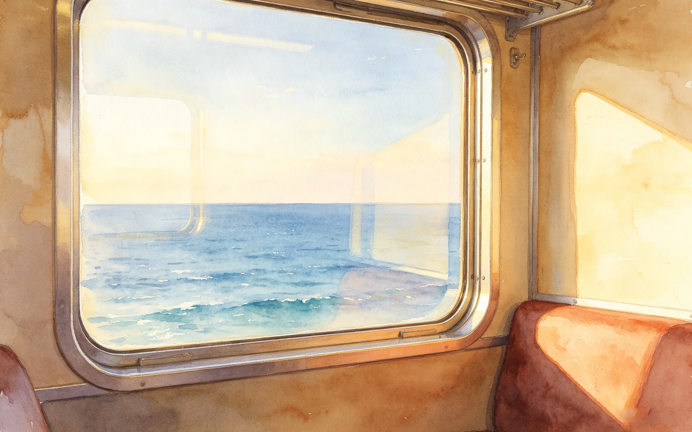
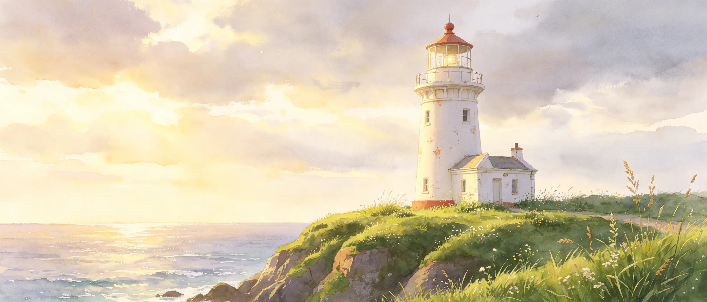
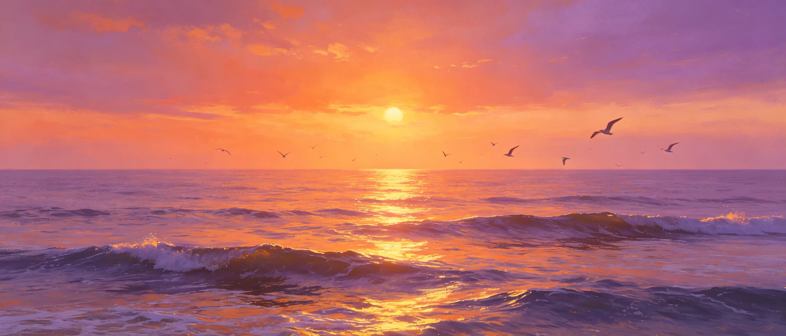
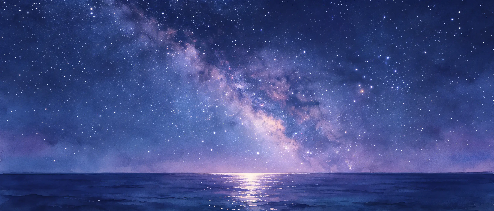
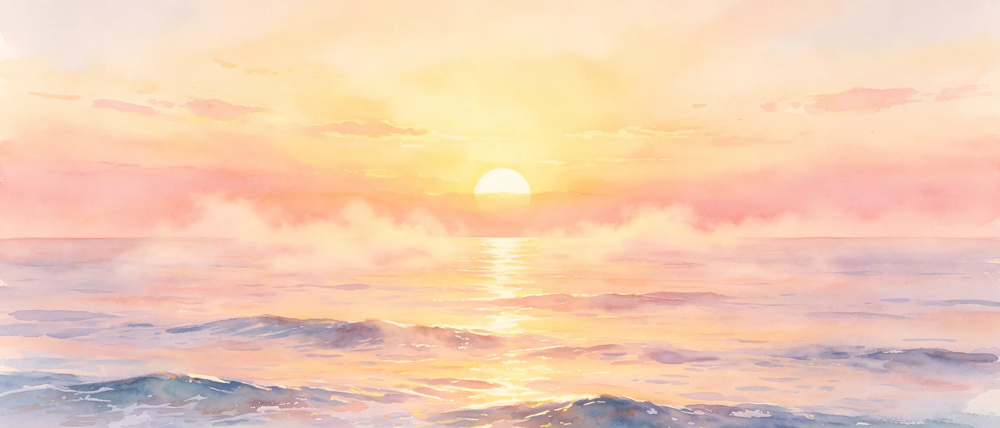
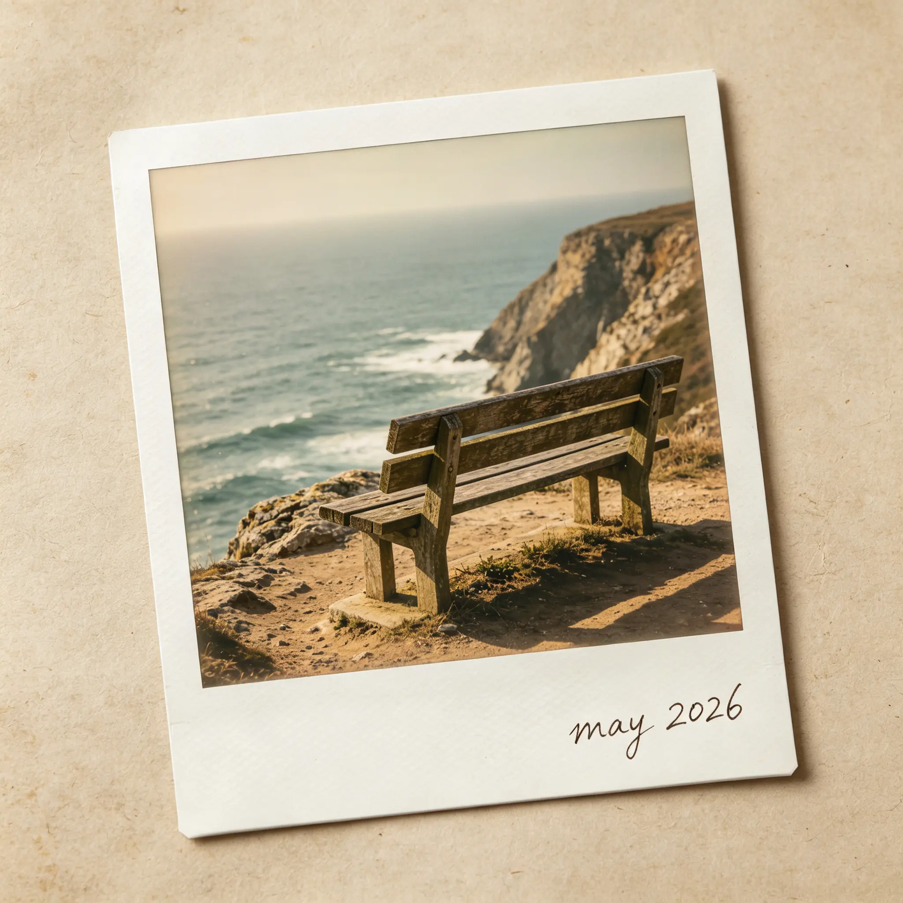

i went back to the coast. i didn't expect to find him there.
the train was late. it always is.
i sat by the window, watching the city shrink into suburbs, then into fields, then into nothing. the sky got wider. the air got lighter. by the time i saw the ocean, i had already forgotten why i left.
that's the thing about the sea. it doesn't ask questions. it just... is.

the town hadn't changed.
same cobblestone streets. same salt-stained buildings. same old bookstore on the corner that never seemed to be open but somehow always was. i walked the familiar path to the cliffside, past the lighthouse that hadn't worked in years, past the bench where i used to sit and watch the waves.
someone was already there.

he had silver-white hair that caught the wind. he wasn't looking at me. he was looking at the water, like he was waiting for something. or someone.
i almost walked past. almost pretended i didn't see him. but something about the way he sat — still, patient, like he'd been there for hours — made me stop.
"is this seat taken?" i asked.
he turned. his eyes were pale blue. the kind of blue that looked like it had seen too many things. "i was hoping someone would ask."
we didn't talk for a long time.
we just sat there, watching the waves break against the rocks. the sun was starting to set. the sky turned gold, then orange, then pink.
"do you come here often?" i finally asked.
"first time," he said. "but it feels familiar."
i wanted to ask what he meant. but some questions are better left unasked.

he told me his name was xavier. he was quiet, the way some people are quiet — not because they have nothing to say, but because they've learned that words don't always help.
"what brought you here?" i asked.
he looked at the water. "i'm looking for something."
"what?"
"i don't know yet."
that should have sounded strange. it didn't.
night came. the stars came out. more than i'd ever seen in the city.
he knew them by name. pointed at constellations. told me stories about gods and hunters and lovers who were separated and found each other again. his voice was soft. like he was telling himself as much as he was telling me.

"you've been looking for a long time," i said.
he didn't deny it. "some searches take lifetimes."
"and if you never find it?"
he smiled. small. sad. "then you keep looking. that's the point."
the next morning, i woke up early. walked to the cliffside. he was already there.
"did you sleep?" i asked.
"not really."
"me neither."
we watched the sunrise together. the sky turned from black to blue to gold. the water sparkled.
"thank you," he said.
"for what?"
"for sitting with me."

i left that afternoon. my train was on time for once. he walked me to the station.
"will you come back?" he asked.
"maybe."
"i'll be here."
i didn't ask how he knew. some things, you just feel.
i think about him sometimes. when i see the ocean. when i look at the stars. when i sit on a bench and watch the waves.
i never asked for his number. never looked him up. never went back to that town.
but i like knowing he's there. sitting on that bench. waiting for something he can't name.
maybe that something is me. maybe it's not.
either way, the sea remembers.
